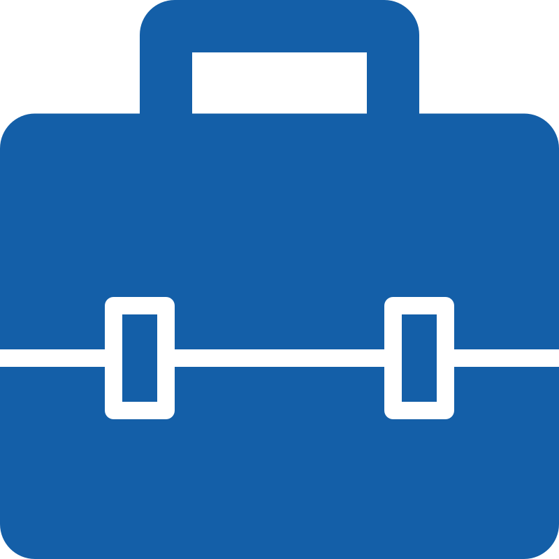
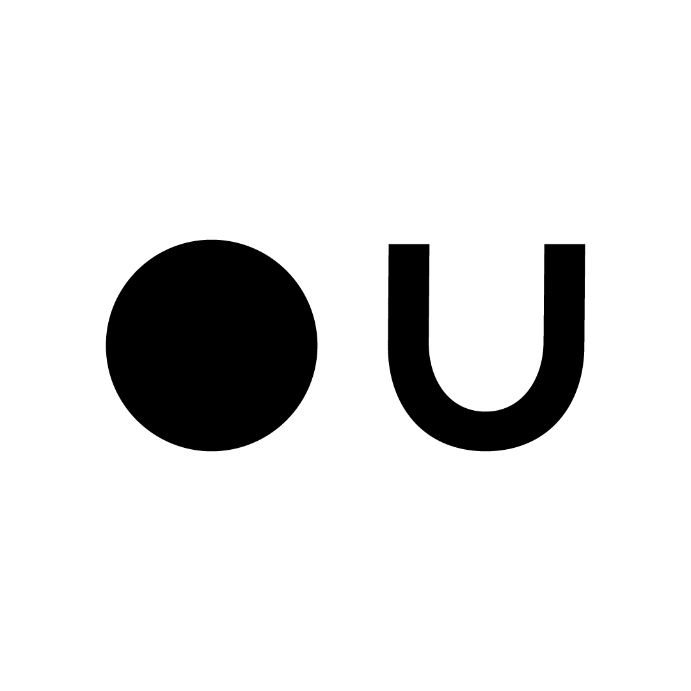
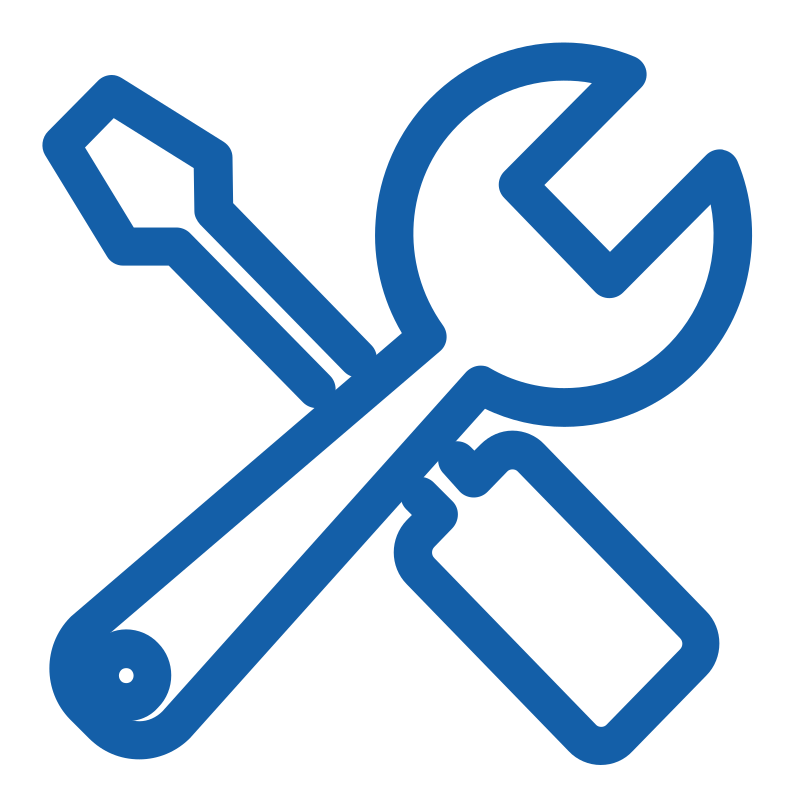

Work ExperienceI came to the Netherlands for this job. I love the culture at Storyteq. Also, the professional people I got the chance to be working with here. Additionally, the product itself, Storyteq, is so interesting that keeps me awake at night and gets me out of bed in morning. This is a large-scale product with lots of important customers: Heineken, KFC, McDonald's, and BMW to name a few.
Business: Imagine Nivea wants to launch an advertising campaign. They want the same ad on 20 channels (YouTube Desktop, YouTube Mobile, Instageam Reels, ...), in 100 different countries (languages) promoting 5 of their products, etc.... With each new option the number of variations become higher, think 10,000 media (image/video) needed for the same campaign. Storyteq allows them to create a "template" in an editor, make parts of it "dynamic", and provide a CSV, which outputs 10,000 medias. Of course with all the featurs you would expect (user management, analytics, asset management, brands, output formats, etc...)
My First Time Using: Vue 2, Vue 3, Typesense, a professional HTML5 Canvas library, Vuex, Pinia, Nuxt 2, Nuxt 3, Vite, Vitest, Selenium, Cypress, Keycloak, Element UI, Element Plus, Tailwind CSS, OpenIDConnect, Sentry, Google Cloud, Kubernetes,
Concept/Business Domain: Advertising, Marketing, Engine + Renderer, AI, Unified Identity across different Products

Software Engineer 1 Year . 8 Months Ucraft Yerevan . ArmeniaThis role was my first international job experience. New things I learned here are large-scale project management and maintaining stable design/UI/UX across multiple products. And the challenge of software internationalization here was far more serious than the internationalization experiences I had before. Additionally using English as the primary language in the office significantly improved my language and communication skills. Plus, Working on a Website Builder was one of the most interesting experiences in my career.
Business: Its a Website Builder. We had an editor with drag and drop capabiliteis, with so many components. Responsive design. Theme/Brand creation and management. Statistics. Rendering the same website that user designed for public web with performance and accessibility in mind.
My First Time Using: Ant Design, Segment, DialogFlow, GraphQL, Lerna, Intercom, Transifex, Mono Repos
Concept/Business Domain: Website Builder, Engine + Renderer, Test-Driven Development/Design, AI, DialogFlow
My role here was Full Stack Web-Application developer, Front-end weighted and later I got promoted to Frontend team lead after 1 year. The main benefit of working at Faraz Pajohan was working with expert people and experiencing well-structured team management and project planning. This was my first time bootstrapping and completing a professional-grade Web Application from the ground up. I constantly applied best practices alongside developing features as the whole team was always encouraged against technical debts. Making it the cleanest codebase I've ever worked with. Mentored an intern who successfully completed their training period under my guidance. New things I enjoyed learning and getting done here are extreme use of WebSockets for real-time data, designing customizable dashboards, running and managing child processes from NodeJS, and creating filterable, searchable, sortable, pageable SQL queries, and practicing Test Driven Development for frontend. As the rest of the team was building a customized OS forked from Debian, I was responsible for installing and running the web application on it. So I got to configure the NGINX, install InfluxDB, run the NodeJS app, and also serve the frontend SPA admin panel on that OS.
Business: We created routers and other more specialized network devices. My role here was always on the admin panel of those devices. And also kind of designing the UI/UX alongside with the team (no in-house UI/UX specialist). It included tables that could have thousands of rows, so performance was always first class citizen. And also modular customizable dashboards.
My First Time Using: React, ExtJS, Material-UI, NodeJS, Socket.IO, React-GridLayout, DBUS, InfluxDB, SQL, Jest, JSDOM, Testing Library, Debian, Scrum, CGI (Common Gateway Interface), Prettier, Husky, Git Hooks
Concept/Business Domain: A little of Networking & Network-Security, Customized OS, Configuration Management, Real-Time data
- One role was at a large company that specialized in stock trading and investment platforms. I worked on a product for future exchanges. The reason I left was I did not see any growth opportunities there. I felt like smartest person in the room.
- The other one was a small company working on a management app with document-sharing features, a calendar, a to-do list, and more. It was built for 3 platforms: Web, Android, and Windows separately. I was working on the Web. Despite the previous one I was surrounded by really genius people here, and I learned a lot even in those short ~1.5 months. The problem though was the excessive working culture there. Working for 12 hours is OK if it happens from time to time, but do it every day and it starts harming your life.
I began my professional full-time career here in Hasin as a Front-end developer. I had the opportunity of working on a very challenging and complex product, called UbiProcess/Bizotop, alongside a very knowledgeable team. Our same web app codebase was ported to Android & iOS using Cordova. I learned material design basics here for the first time.
Business: It was a product used by banks/municipalities/institutes for creating user-facing portals. They could create forms and processes by creating BPMN/BPMS diagrams, (drag drop elements/steps and connect them together) and we created their fully managed portals which included all basic necessities (user signup/login, form rendering, customization, following brands, etc...).
My First Time Using: Angular, TypeScript, Cordova, Material Design, Angular-Material, JointJs, SaSS, WebStorm, Git, XCode, MacOS, JIRA, GitLab, ESLint
Concept/Business Domain: BPMS & BPMN, Website & App Engine + Renderer, Form Generator/Builder, Hybrid Web Apps
Freelanced on a variety of web-related projects, as well as a
C++/CUDA project.
The most notable one was developing a full-featured frontend for a
hotel in Hamedan, including reservation, admin panel, payment, and
more.
Another one was a network packet classifier using C++ and CUDA. It
was an experimental project to find out if using GPUs in internet
routers with CUDA could help us with classifying internet packets
in real time.
My First Time Using: C++, CUDA, SFML, AngularJS, Bootstrap, Visual Studio
Concept/Business Domain: Packet Classification for Routers, Aggregated Bit Vectors Algorithm, Game Development, CRUD/RESTful APIs
Worked on various projects, mostly with WordPress and OpenCart. My
responsibilities were fixing PHP and JavaScript issues and some
HTML/CSS tweaks. We created various online shops and a handful of
websites for local businesses in Hamedan with eye-catching landing
pages.
My most satisfying experience was on a headphone shop. They asked
for a 3D preview of headphones, which we could not deliver (lack of expertise, and WebGL wasn't that common and supported back then), but
instead, we brought every headphone in, one by one, took 30-40
pictures of each, and created a 360° preview on the website that you could rotate. I
used a JQuery plugin to accomplish this.
My First Time Using: PHP, JavaScript, HTML, CSS, JQuery, Dom, WordPress, OpenCart, Notepad++
Concept/Business Domain: Online Shops, Beautiful Landing Pages, Payment Gateways

Tools & Skillsgit reflog.
MongoDB
Most basic knowledge. Always loved it because it was easier than SQL 👀
SQL
Most basic knowledge. Just know the concepts and can find my way by
searching or using AI.
HTML
YES!
CSS
I always accomplished what I wanted with it, even if without knowing how.
C++
I've built a very basic 2D move-and-shoot game with SFML, wrote a
network packet classifier with CUDA, and modified a CGI web service
written in C here and there.
CUDA
I know the concepts behind it, why and how this whole computing on
GPU is cool, and implemented a network packet classifier with CUDA.
Other Stuff
-
I have experiences transforming legacy code into new code. I
migrated 3 different projects from:
- AngualarJS/JavaScript -> Angular/TypeScript
- ExtJS -> React/MaterialUI -> TypeScript
- Vue.js 2/Nuxt 2 -> Vue.js 3/Nuxt 3
- I know my way in Audio: producing music, mixing & mastering, and have worked with different professional DAWs: Ardour, Pro Tools, Cubase, FL Studio, Ableton, GoldWave, Adobe Audition, and Audacity. I also know enough of WebAudio API to produce and alter sound.
- Education: I finished high school and then got accepted into Bu-Ali Sina University (Hamedan). Its a good university. But after 4 semesters I got expelled for bad grades 👀. But it turned out all good. I'm happy with my life now. 😎
- I wrote a blog post called "Merge Request Mastery" which is about creating good merge requests. Including some tips and tricks I use myself to create "reviewable" MRs: Merge Request Mastery
-
I've lived in:
- Hamedan, Iran (my hometown)
- Tehran, Iran
- Yerevan, Armenia
- Amstelveen, Netherlands
- Rijswijk, Netherlands
- Obdam, Netherlands (probably staying)